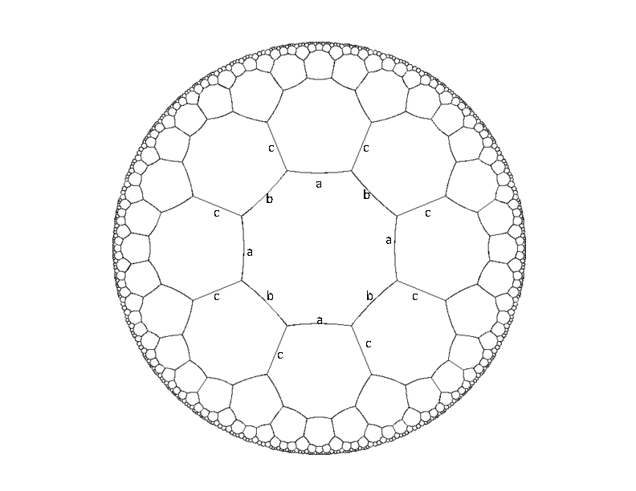

Problem B: Octagons
Below is a picture of an infinite hyperbolic tessellation of octagons.
If we think of this as a graph of vertices (of degree three), then
there exists an isomorphism of the graph which maps any vertex x
onto any other vertex y. Every edge is given a label from the set
{a,b,c} in such a way that every vertex has all three types of
edges incident on it, and the labels alternate around each octagon.
Part of this labeling is illustrated in the diagram.

So a path in this graph (starting from any vertex) can be specified by
a sequence of edge labels. Your job is to write a program which, given
a squence of labels such as "abcbcbcabcaccabb", returns "closed" if
the path ends on the same vertex where it starts, and returns
"open" otherwise.
Input Specification
The input will begin with a number Z ≤ 200 on a line by itself. This is followed
by Z lines, each of which is a squence of length at least 1 and at most 40
of 'a's 'b's and 'c's.
Sample Input
2
abababab
abcbcbcbcba
Output Specification
For each input instance, the output will be the words
"closed" or "open", each on a single line.
Output for Sample Input
closed
open
Danny Sleator